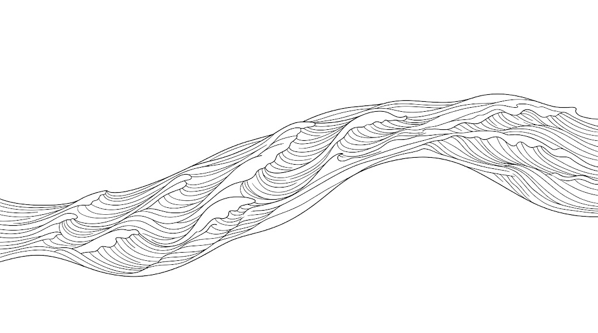

同一個主持人、同一個題目（AI 是不是泡沫），這是第二個人的答案。Jeremy Grantham 那篇已經把「泡沫怎麼形成」講完了，所以這篇刻意不重複那半邊，只抽 Dalio 獨有的部分：泡沫破裂當下的機械過程、國家走到破產時政府會做什麼，以及一套把兩者裝進去的三層週期模型。他的說法有個明顯特徵，幾乎不用形容詞，一路都在講「什麼推動什麼」。▶ 2:55
如果只看新聞，現在的世界很難解釋：經濟數據沒有崩、股市在高點，但政治在撕裂、政府都喊沒錢、大國之間在互相試探。Dalio 說這不是三件事，是同一件事的三個切面，因為你正好活在三個週期同時走到末端的時候。他整場訪談其實只在做一件事，把這三層拆開給你看，然後說明它們撞在一起會發生什麼。
01先把三層拆開▶ 38:22
這一段在影片後半才出現，但它是整套說法的地基，所以放在最前面。Dalio 的模型裡有三條線在同時走，時間尺度差很多，混在一起看就什麼都解釋不了。
第一條是技術與生產力，它沒有週期，只會累積：人類學會的東西不會忘記，所以工具一代比一代好，這條線長期只往上，不受下面兩層影響。第二條是債務短週期，平均約六年一輪（正負三年），就是一般說的景氣循環：衰退、央行放鬆銀根、繁榮、產能吃緊通膨升、央行收緊、再回到衰退。第三條是大週期，平均約八十年，差不多一個人的一生，上一次重置在 1945 年。這一層崩解的不是股價，是三種秩序：貨幣秩序（錢怎麼算、債怎麼還）、國內政治秩序（誰統治、規則是什麼）、地緣秩序（哪個國家說了算）。
Dalio 自己就說別太計較這個數字，這比較像人的壽命，平均值有意義但個體差異很大。該看的不是年份而是症狀：負債水準、教育與競爭力、內部衝突程度。他強調這些都是可以測量的客觀數字，像做健康檢查一樣，他判斷位置的方式是看體檢報告，不是看日曆。

小漣漪：你熟悉的升息降息大浪：一生只遇一次的那層，現在走到尾聲02財富不等於錢，這是整條崩盤鏈的起點▶ 2:55
拆完三層，先看最短的那層怎麼壞掉。這裡 Dalio 提出一個聽起來像廢話、但整段推論都靠它的區別：你不能花財富，只能花錢。你手上那張股票值一億，那是財富；要拿它去買東西，必須先把它賣掉換成錢。崩盤的本質就是很多人被迫在同一時間做這個轉換。
他在訪談裡拿一股 AI 公司的股票當道具，一步一步示範。市場給這股一百元，你的帳面淨值就變成一百元。你拿它去銀行抵押，借出五十元。這時候上漲會自我放大：資產漲，抵押品更值錢，能借更多，買更多，再推高價格。
然後某件需要現金的事發生了。價格掉到二十五元，但你欠銀行的五十元不會跟著變少，你倒欠二十五元，只能更快賣。所有人同時在做同一件事，價格繼續掉。接著它從市場外溢到生活：人們覺得變窮，減少消費，別人的收入跟著減少，再減少消費。整個上漲時的放大循環，反過來跑一次。
他還補了一句解釋這件事為什麼躲不掉：在技術劇烈變化的時期，沒有人能算準要投入多少。你要嘛投得不夠、被對手甩開，要嘛投一大筆、但沒有人能精確。所以過度投入不是誰特別笨，是這個局面本身的結構。
03刺破泡沫的不是黑天鵝，是具體的抽現金機制▶ 12:37
承上，既然崩盤的關鍵動作是「被迫變現」，那問題就變成：什麼事情會逼一大群人同時變現。Dalio 的答案很不戲劇化，他沒有講黑天鵝，講的是幾種具體機制。
- 升息，最典型的一種。當持有債券拿到的利息，開始高過股票的期望報酬，資金就會搬家；同時有負債的人被迫拿出更多錢還本付息。
- 財富稅或任何逼富人變現的稅制。他直接說，要繳稅就得賣資產，這件事本身就可能是刺破泡沫的那根針。
- 任何讓市場突然需要現金的事件：戰爭、信用事件。
接著是這篇最值得單獨記住的一段，因為它跟大部分泡沫討論的方向相反。所有人都在看需求（誰在買、買得多貴），Dalio 說頂部的訊號在供給。
意思是：當市場搶著要股票，市場就會開始製造股票。IPO、增資、把估值講高再發行一輪。他舉的例子是實際只募到五千萬、公司估值卻被定成十億，於是帳面上多出一位億萬富翁，但沒有任何人真的付過十億。那個估值是紙上的，而且同樣不能花，要花還是得賣。
訪談裡剛好有個現場案例。主持人說有位做 AI 公司的朋友，自己也認為在泡沫裡，所以決定趁現在先募幾億美元，等崩盤後手上有現金去便宜收購撐不住的對手。Dalio 的回應很關鍵：這個對個人完全理性的決定，本身就在增加股票供給，也就是在把泡沫推得離破裂更近一點。每個人理性地為自己準備，加總起來就是那根針。
另外一個判斷維度是籌碼在誰手上。強手是了解自己在買什麼、而且沒有用槓桿的人；弱手是不熟這個領域、又用借來的錢或槓桿型 ETF參與的人。他形容後者比較接近擲骰子。弱手比例越高，同樣的下跌會逼出越多被迫賣單。
最後他提醒一個容易被忽略的事：泡沫不是有或沒有的開關，是程度問題。所以該問的不是「這是不是泡沫」，而是「泡沫化到什麼程度、籌碼在誰手上」。
04那錢要放哪，他先講現金為什麼最差▶ 17:05
知道崩盤怎麼運作之後，直覺反應是「那我抱現金」。Dalio 說這是最大的誤解之一，而且他不是講風險偏好，是講三層扣減疊在一起的算術。
第一層，通膨吃掉購買力，訪談當下大約百分之三點五到四。第二層，你把錢放進定存或貨幣市場基金拿到的利息，大概也就那個水準，剛好打平。第三層，那點利息還要繳稅。他特別點出這一層的荒謬：你實質上根本沒有跑贏通膨，但帳面上有利息收入，所以還是得繳稅。三層加起來，長期下來現金是報酬最差、而且幾乎是被保證最差的選項。
訪談另一段他講自己從沒錢到有錢的整段過程，一直在數同一個數字：如果收入完全中斷，我可以撐幾個月。那個緩衝他從來沒有放棄過。所以這兩件事要分開看，現金當保險是必要的，把現金當長期資產持有才是慢性失血。
然後是他真正的主張：分散。他當場把股票、黃金、債券、房產、比特幣一個個攤開，指出這些東西在不同情況下漲跌方向不同，黃金上漲時債券或房產往往相反。他強調分散的效果是「風險降低但報酬不減」，這是他整場最接近「建議」的一句話。要注意的是各資產波動度不同，配比要據此平衡，不是每樣切成等分。
他也給房產一個中性的位置：優點是那是你的生活環境、有強迫儲蓄的效果、稅務待遇通常較好，但他不主張單押。
05硬資產怎麼配，以及他為什麼比特幣只放 1%▶ 28:12
分散清單裡有一類他特別點名，叫做印不出來的錢（hard money）。他給的比例是資產的百分之五到十五，而且明講他個人偏好黃金。
理由是一句很值得記住的話：黃金是唯一不是別人負債的金融資產。你手上的債券是某個政府或公司欠你，你的存款是銀行欠你，這些都需要對方履行義務；黃金不需要任何人做任何事，它就在那裡。他還補充黃金到 1971 年之前本身就是貨幣，而且至今仍是各國央行持有的第二大儲備貨幣。
他確實有持有比特幣，但只有大約百分之一，理由講得很具體：
- 技術可能傷害它：他點名量子運算這類可能破解加密的技術。
- 政府可以監控，因此可以課稅、可以管制。這是他最在意的一點。
- 央行不會大量持有它：因為央行要的正是交易的隱私與控制權，而這正好是比特幣做不到的。
他的對照案例是俄羅斯：受制裁時各種資產被凍結沒收，但黃金拿不走。他說在衝突時期，人們對「我拿著它，別人就拿不到」這件事的重視會回來。
比特幣這題在這個系列裡已經有三種立場：Cathie Wood 說它是四百年來第一個新資產類別、2030 上看 150 萬美元；Grantham 說它遙遠的未來一定歸零；Ben Felix 與 Pabrai 都以能力圈外為由不碰。Dalio 是唯一一個既承認它的類別價值、又刻意只給極小配比的人，而且他把「為什麼輸給黃金」講得很清楚。四個立場都有完整論證，選之前先想清楚自己信哪一套邏輯。
06如果你還沒有資本，他的答案是什麼▶ 48:35
上面談的都是「已經有資產的人怎麼放」。主持人替沒有資產的人追問了一句，Dalio 的回答是：那你唯一的資產就是你自己，問題因此變成怎麼讓自己的時間值錢。▶ 23:34
這段有幾個具體的說法：
- 頂端的溢價是倍數級的。不論買畫、買家具還是買一個人的時間，最頂尖的價格是平均的好幾倍。他的粗略說法是多投入一成，可能換到約兩倍的回報（原話帶著「something like that」，這是比喻不是量化結論）。
- 同樣的技能在不同場域定價差很多。這段主要是主持人的論點，Dalio 表示同意：與其向現在的老闆要一成加薪，不如換到一個同樣技能被定價更高的地方，那才是階梯式的差別。
- 決定成敗的是適應力，不是智力。他說歷史顯示活下來的不是最聰明或最努力的物種與個人，而是最能適應改變的。他舉的例子很直接：以前的標準答案是「學會寫程式」，然後 Claude Code 這類工具出現，寫程式的人開始擔心自己的工作。
- 所以不要問該做哪個職業。他刻意拒絕給具體職業建議，說那會誤導人。他給的是三步：接受你無法預測未來、把「用 AI 這類工具擴充自己能力」的上限拉到最高、用它讓自己盡可能有用而且做讓自己快樂的事。
- 工作與熱情合一，但別忘記錢那一塊。他重複了兩次「don't forget about the money part」，同時也說錢和快樂的相關性在基本水準之上就很低了。
這段內容本身不算新，值得注意的是他把它跟大週期綁在一起講：正因為大週期末端的環境變化特別快，「押注某個特定職業」才變成一個結構性的壞主意。這個推論鏈才是這段的價值。
Dalio 對就業還有一個值得單獨記住的區分：失業率的劇烈跳升，主要來自泡沫破裂造成的裁員（短期、劇烈），而不是 AI 的技術性取代（長期、漸進）。兩股力量同時在跑，很容易被當成同一件事，於是把景氣循環的帳算到 AI 頭上。同一題的另外兩個角度：Mo Gawdat：你只剩三年 從「勞動套利崩解」推導同一個問題，結論比 Dalio 急迫得多；AI 時代職涯心法 則是他這段抽象建議的操作版，把「用 AI 把自己的能力上限拉到最高」拆成六個可以照做的技能。
07把尺度拉到最大：國家怎麼走到破產▶ 1:04:07
前面談的都在最短的那層週期裡。現在回到大週期，看它走到末端時會發生什麼。這一段是整篇最少見的內容，因為它談的不是市場會怎樣，是政府會怎樣，而政府的動作最後會決定你的資產能不能自由移動。
Dalio 用英國當現場案例（他指出英國近七年換了六位首相，並把這讀成週期的症狀，不是個別政治事件）。國家走到這裡時會被四面夾住：
三條路都走不通時，實際會發生的是三件事的混合：印鈔票（結果是通貨膨脹）、債務重組（最常見的手法是把到期日拉長，等於把還錢的時間往後推）、以及最後一項。
資本管制與離境稅。Dalio 說得很直白：當政府認為有錢人要跑，它就會設法讓你跑不掉。而且他特別提到法律可以改成溯及既往，以過去某個日期為準課稅，讓「先走一步」也沒用。他強調這些以前都發生過，唯一算比較新的工具是財富稅。
他對財富稅本身的評估偏技術面而不是立場：行政上很難執行，因為大量財富（未上市股權、藝術品、不動產權益）根本不好估值。而且如同前面說過的，要繳稅就得變現，變現會壓低資產價格，這件事本身可能就是那根針。
那出路是什麼？他的答案是跨黨派的強中間路線：由真正懂經濟怎麼運作的兩黨人士組成委員會，提出一個痛苦但共同承擔的計畫。他自己也直說這很難、機率不高，但那是唯一走得通的路。他的理由是：只要左右兩邊還在互相開戰，情況只會更糟。
08一條尾部風險：不必開火的權力▶ 1:22:40
訪談最後一段花很多時間談當下的地緣時事，那些時效很短、這裡不收。只留一條有結構意義的，因為它示範了「大週期的地緣那層」怎麼傳導到市場。
Dalio 舉例：如果中國封鎖台灣晶片出口，哪怕只有五天，全球股市就會崩，後果極其嚴重。重點在他接下來的結論，光是有能力做出這個威脅，本身就是權力，不必真的動用軍事手段。他因此認為台灣問題最可能不是靠戰爭解決，而是靠壓力累積。
這條的價值不是預測（他自己也承認在猜），而是指出一個傳導路徑：地緣事件不必升級成戰爭，就足以讓全球市場重新定價。至於整體格局，他判斷世界會走向區域化（美洲一塊、亞太一塊），而不是出現單一新霸權，也不是全面戰爭，理由是各國最終的強弱取決於內部：教育、財政、治理，而不是軍力。
—怎麼把它用在你身上
- 把現金重新歸類：它是保險，不是資產。 拿一次緊急預備金出來檢查，問的是「收入中斷我要撐幾個月」，而不是「這筆錢報酬多少」。超過那個月數的部分留在現金裡，就是在慢性失血，因為通膨、打平的利息、還要繳的稅這三層會一直扣。
- 你的投資追蹤系統可以加一組供給面訊號。 現有的觀察多半偏估值與相對強弱，Dalio 這套補的是頂部特徵：IPO 與現金增資的發行量、槓桿型 ETF 的規模變化。這類指標的用途是「泡沫化程度」的溫度計，不是進出訊號。
- 盤一次「資金能不能自由移動」這個風險。 資本管制與離境稅是大週期末端政府缺錢時的常見手段，而且可以溯及既往。這條對放在海外的部位是結構性的、跟市場漲跌無關的風險，值得單獨想過一次自己的曝險有多大。
- 注意配置裡有沒有「假分散」。 如果你的資產同時押在同一條地緣斷層線上，例如與台灣連動的部分佔比不低，那晶片封鎖這類事件對你不是分散，是同向風險。這條不必拿來調整持股，但該進你的風險清單。
- 對照著問自己：我在買的東西，籌碼在誰手上。 強手是懂自己在買什麼且沒用槓桿的人。這個問題比「現在貴不貴」更容易回答，而且更能預測跌下來時會不會有連鎖賣壓。
這篇刻意沒重寫「泡沫怎麼形成」那半邊，因為 Grantham：泡沫是真的，只是沒人敢告訴你該出場 已經講完了，包括估值極端、市場心理，以及為什麼機構永遠不會提醒你出場。兩篇合起來才是完整一輪：一個講怎麼吹起來，一個講怎麼破。相反方向的樂觀論在 Cathie Wood，而「乾脆別判斷位置」的立場在 Ben Felix。